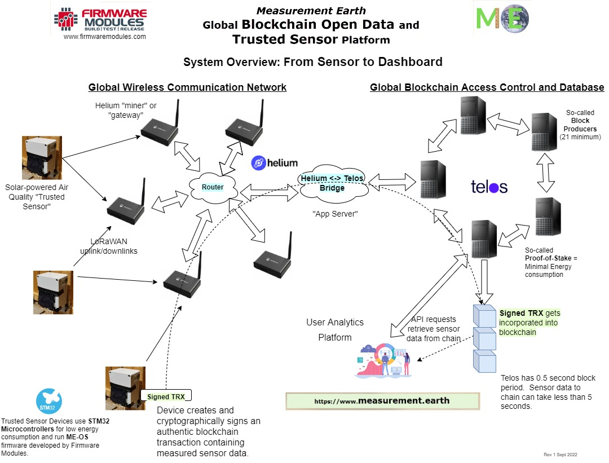

Measurement {Earth}: How Does It Work?
Technology
The system, at its core, is about acquiring environmental data in a robust and low-maintenance way and then transmitting an
authentic and "trusted" measurement dataset to a publicly accessible cloud platform.
Blockchain is one of those technologies that naturally fits. It has a built-in authentication and trust layer and provides a means to publish widely accessible data.
Helium Network is used because it is the most ubiquitous and accessible low-power wide-area-network (LPWAN) technology available right now.
The weather stations take periodic measurements. When measurements are completed, they are gathered into a blockchain "transaction" and signed with a unique "secret key", a key that only the weather station possesses.
The signed transaction is transmitted over the Helium network to a bridge server that I maintain. The server's only purpose is to
forward the already-signed transactions to the blockchain for ingestion, and to ensure liveness of blockchain state on the devices.
When a transaction is accepted into the blockchain, it is "proof" that the data came from the originating weather station and not from anywhere else.
The big-picture view of the system is shown below.
The end result is that raw data gathered from sensors is compiled into blockchain history, available to anyone anywhere anytime to access and process.
For example, this website uses a publicly accessible HTTP API endpoint to pull the data and plot it in charts using Javascript, leaflet and chartjs.
An AI platform or predictive or analytical data project can similarly access and ingest the data into proprietary or open models with simple API calls.

Economics
Networks don't run themselves. Devices don't self-organize into existence. There are many players involved and everyone needs a cut to make this sustainable.
The weather stations are hand-built from quality components. It takes time and expertise to do this.
The various networks in play have on-going data access costs.
The cloud infrastructure is run by many independent yet collaborative organizations that work tirelessly to keep the lights on.
So how do we (you and I) pay for this? And what do we get out of it? First and foremost, we get raw environmental data that cannot be taken down, revised or altered after-the-fact, and is available to us and anyone, anywhere, always. You can't say that about a lot of data projects.
Secondly, we get a way to pay for this, to make it happen and keep it going and do what we love doing.
I am introducing the concept of Sponsors and Operators.
Sponsors commission new weather stations and keep paying for ongoing operating costs. As part of commissioning, 1 year of operating costs are included.
A portion of this operating cost is split with Operators.
Operators are responsible for setting up (basically mounting, as the units otherwise work out of the box) in a suitable location with the occasional dust-off, photo and debug assistance. Sponsors can be Operators, but this is not required.
A portion of the yearly operating fees are used to pay for the network and other costs. The other portion is turned into native tokens (TLOS) and transferred to the registered station Operator.
If you want to become an Operator, you do have to know how to set up a blockchain wallet and create an account on Telos Network. I can assist with this.
After the year is up, a Sponsor (same or new one) can pay for another year of service, which is again split with the registered Operator in the form of native tokens.

© Measurement Earth 2020-2023